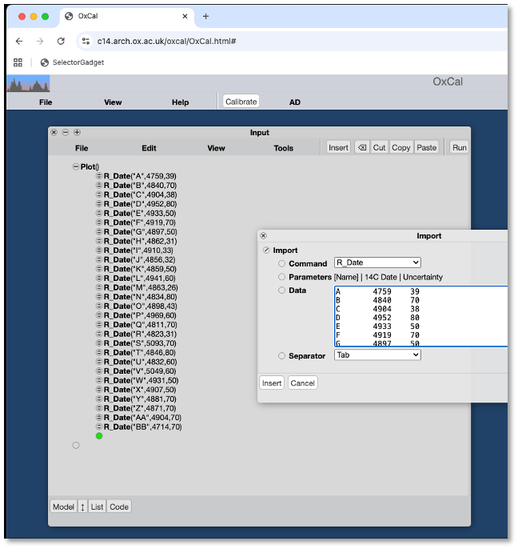
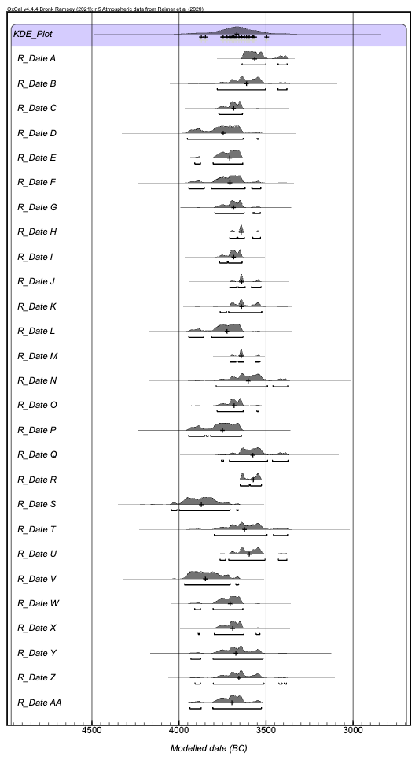
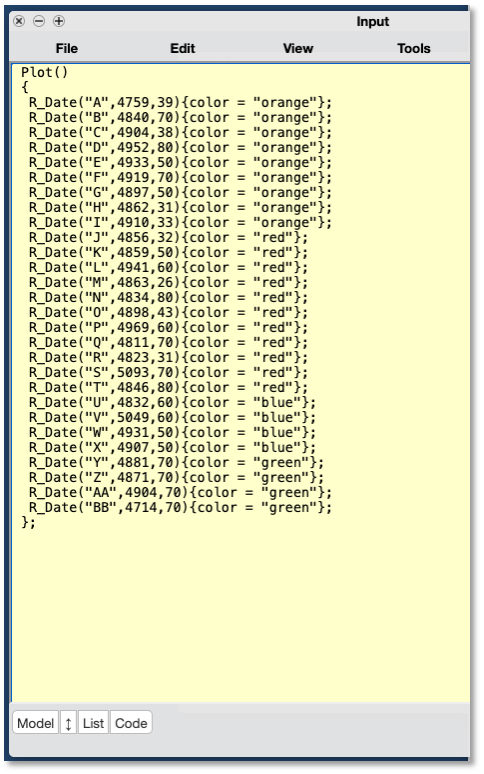
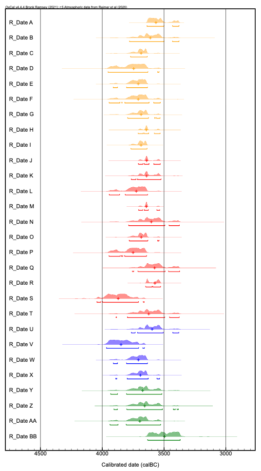
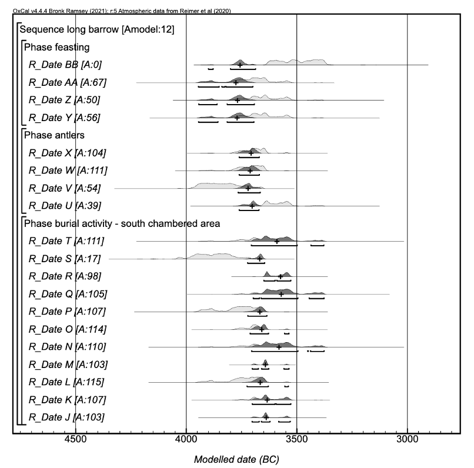
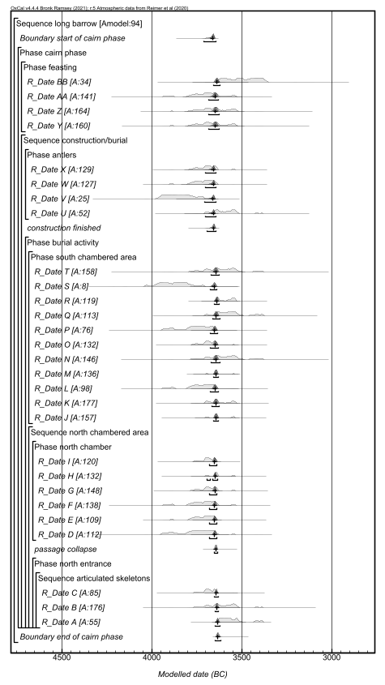

8 Exercise 3
8.0.1 A fictional long barrow dated with antlers
Bayliss and colleagues (Bayliss et al. (2007), 7-15) use a set of 28 simulated radiocarbon dates from specified calendar ages, representing a “known” history of construction and use for a fictionalized long barrow (based, Bayliss and colleagues note, “on a simplified version of the chronological model for Hazleton North long cairn presented in (Meadows_Barclay_Bayliss_2007?)”). These are presented in here (Table 1) and in the accompanying .xlsx file (Bayliss_2007_Table1.xlsx; below we will revisit some of the modeling that Bayliss and colleagues use to demonstrate the challenges of reconstructing this known long barrow history. That known history is as follows: “The actual dates of the antlers used in the construction of the cairn range from 3695 bc to 3691 bc, the construction of the cairn was completed in 3690 bc, the passage to the north chamber collapsed between 3645 bc and 3640 bc, and the last interment occurred in 3630 bc. Burial occurred continuously for 60 years, between 3690 bc and 3630 bc and all the dated events cover only 65 years.” (Bayliss et al. (2007), 7)
Table 1: Simulated radiocarbon dates from Bayliss et al. (2007).
| **** | Sample ID | Calendar age | Simulated 14C age | Simulated 14C error |
| North entrance | A | 3630 | 4759 | 39 |
| B | 3635 | 4840 | 70 | |
| C | 3640 | 4904 | 38 | |
| North chamber | D | 3690 | 4952 | 80 |
| E | 3680 | 4933 | 50 | |
| F | 3670 | 4919 | 70 | |
| G | 3650 | 4897 | 50 | |
| H | 3660 | 4862 | 31 | |
| I | 3675 | 4910 | 33 | |
| South chambered area | J | 3690 | 4856 | 32 |
| K | 3680 | 4859 | 50 | |
| L | 3675 | 4941 | 60 | |
| M | 3670 | 4863 | 26 | |
| N | 3660 | 4834 | 80 | |
| O | 3650 | 4898 | 43 | |
| P | 3645 | 4969 | 60 | |
| Q | 3640 | 4811 | 70 | |
| R | 3630 | 4823 | 31 | |
| S | 3685 | 5093 | 70 | |
| T | 3635 | 4846 | 80 | |
| Antlers | U | 3691 | 4832 | 60 |
| V | 3692 | 5049 | 60 | |
| W | 3695 | 4931 | 50 | |
| X | 3692 | 4907 | 50 | |
| Feasting | Y | 3690 | 4881 | 70 |
| Z | 3670 | 4871 | 70 | |
| AA | 3650 | 4904 | 70 | |
| BB | 3630 | 4714 | 70 |
Working with simulated data – in this example and in general – provides an advantage that is crucial in assessing modeling approaches: we are trying to reconstruct a known pattern. In this case, the key parameters of the “archaeological” scenario that we are trying to reconstruct are that:
· the span of time during which burials were placed in the long barrow is 60 years,
· burial was continuous during that period (rather than concentrated in the early or late part of the period, or with a gap in use at some point),
· construction was completed in 3690 BCE, and
· the passage collapsed while the chamber was still in use, between 3645-3640 BCE.
By design, these closely mirror common archaeological questions: when was a structure built? when did it fall out of use? was it used continuously? when did archaeological identifiable events (e.g., partial collapse) occur?
The first and most vital point that Bayliss and colleagues make is that visual inspection of these radiocarbon dates after calibration will almost inevitably mislead us. We can explore this for ourselves by importing (see 2.1.2) the dates into a new model in OxCal. By varying the ways in which we model those dates – that is, the amount of prior information we include – we can explore the effect of adding priors on our interpretation of radiocarbon dates, as well as the likely consequences of not considering prior information.
Begin by using the Import tool (‘Tools’ ‘Import’) to import the dates from the spreadsheet as radiocarbon determinations, using R_Date. Calibrate these (‘File’ ‘Run’) and plot the results (‘View’ ’Plot Dates’) (Figure 1). The results are straightforward: 28 calibrated radiocarbon dates (Figure 2). Consider how you or your colleagues might be likely to interpret these dates, if you were asked to assess when use of the long barrow began, how long it lasted, and when it ended. Likely assessments might be 4000 – 3400 BCE (treating most parts of most probability distributions as indicating relevant activity) or perhaps 3900 – 3500 BCE (presuming that dates that extend outside of the central tendency of the assemblage to be irrelevant). Your assessment might vary in detail from either of these, but is unlikely to be radically different. But we know – because the dates are simulated based on known calendar dates – that the barrow was constructed in 3690 BCE and used for 60 years, until 3630 BCE.

By wrapping all of these R_Date lines in a KDE_Plot command, we can summarize these dates with a kernel density estimate (KDE) (Bronk Ramsey (2017a)), producing a single plot (top of Figure ??).

Figure 8.1: Unmodeled dates.
This is analogous to a histogram that illustrates frequency (how many dates are associated with a given year?). We can’t make a simple histogram because each radiocarbon determination has uncertainty associated with it that needs to be taken into account. We can look at the plot of that KDE and tell that the medians of most of the dates (the black ‘+’ symbols beneath the plot) fall between approximately 3750 BCE and 3550 BCE. Unfortunately (see below) those medians are not reliable indicators of the actual calendar dates of the dated events, but they do provide us with an alternate means of assessing the likely beginning/end/span of the barrow. [add a figure of KDE + rug plot of actual calendar dates]
Perhaps we can improve things by considering – and visualizing – the varied proveniences of the samples. We can classify them (as the table does) by context, associating some with construction, others with use, and visualize this classification by assigning colors to dates in the ‘Code’ view (Figure ??) (you can also manipulate color by using the ‘Edit’ column in the ‘Results’ window or by selecting the ‘Color Selected’ command from the ‘Edit’ dropdown in the ‘Results’ window).

The results (Figure 8.2) begin, in a small way, to allow us to incorporate prior information into our interpretation: although we are not adjusting any probabilities accordingly, they allow us to consider that the dates are associated with archaeologically recognized events (“construction”, “use”, etc), rather than simply all indicative of “the long barrow”. The dates on antlers (in green), for example, are associated with construction, and the dates associated with feasting evidence (in blue) with pre-construction activity. We would expect, therefore, that the latter should predate the former – an expectation apparently confounded by the calibrated dates, which do not show any evident precedence of one group relative to the other. Here it becomes critical to consider how each calibrated date (probability density function [pdf]) should be read. These are representing the imprecision with which we can identify the calendar year of the event that we have dated, not spans of time. That is, ‘R-Date A’, for example, comes from a sample that we are 95% confident was produced between 3638 and 3380 BCE. Because the probabilities are not evenly distributed (a result of the wiggles in the calibration curve; see Blaauw’s animation illustrating how a date is calibrated), the median of that distribution is 3566 BCE, but as a glance at the plot of the distribution demonstrates, probability is not evenly distributed around that median.

Figure 8.2: Classifying and coloring dates.
This uncertainty leaves plenty of room for the problem we have observed with respect to the antler and feasting dates: events might be in sequence and we might not be able to tell. Here the basic insight of a Bayesian approach comes into play: if we’re confident about the sequence of those dated events, because of information derived from their excavation, then we can incorporate that information into our consideration of the radiocarbon results. In fact, we would be foolish not to – why pretend that all things are equally possible when we have good reason to think that they’re not? That is, if we think that the antlers should predate the feasting residue, then we can and should incorporate that information into our assessment of the pdf associated with each date.
The basic building blocks of such a model in OxCal are Sequence and Phase. Sequence specifies the simplest OxCal relationship; elements within a sequence are in chronological order from earliest to latest. Phase is effectively the opposite: it specifies that we cannot assert anything about the ordering of the elements contained (but might want, for example, to specify that they all predate or postdate some other model element).
We can illustrate this with a subset of the simulated long barrow data. As noted above, the excavation of the long barrow made clear that feasting events preceded construction, that antler picks were used in construction, and that burial activity followed the conclusion of construction. We can specify this in a model using the Sequence and Phase commands, which can be nested as necessary. In the code below, we specify an overall sequence (“long barrow”), which begins with a phase (“feasting”). In that “feasting” phase, there are several dated events whose sequence we know nothing about – all we know is that they all precede construction and burial. The “feasting” phase was followed by two subsequent phases: a construction phase (“antlers”) and a burial phase.
[pair code on left with output on right?]
Plot()
{
Sequence("long barrow")
{
Phase("feasting")
{
R_Date("BB",4714,70);
R_Date("AA",4904,70);
R_Date("Z",4871,70);
R_Date("Y",4881,70);
};
Phase("antlers")
{
R_Date("X",4907,50);
R_Date("W",4931,50);
R_Date("V",5049,60);
R_Date("U",4832,60);
};
Phase("burial activity - south chambered area")
{
R_Date("T",4846,80);
R_Date("S",5093,70);
R_Date("R",4823,31);
R_Date("Q",4811,70);
R_Date("P",4969,60);
R_Date("O",4898,43);
R_Date("N",4834,80);
R_Date("M",4863,26);
R_Date("L",4941,60);
R_Date("K",4859,50);
R_Date("J",4856,32);
};
};
};
If you run the code, you’ll see that OxCal produces several angry red warnings with the results. There are two issues: poor model agreement (‘Warning! Poor agreement - A= 11.6%(A’c= 60.0%)’), and an absence of boundaries (‘Warning! No boundaries used - check manual’). The poor agreement is an indicator that you’ve asked the model to believe improbable things: the priors that we’ve specified (three phases in sequence) and the radiocarbon dates that we’ve included in those phases cannot easily be reconciled. We can explore why this is difficult by plotting the model results (Figure 8.3). The absence of boundaries is a warning that we haven’t provided an important prior, which we’ll discuss below.

Figure 8.3: Modeled sequence results.
The plot of the results differs from our previous efforts (Figure 8.1 and Figure 8.2) in an important respect: rather than simply displaying a pdf of each calibrated date, the plot shows two pdfs for each calibrated date. The calibrated date is in light grey, and the posterior estimate – the probability adjusted using the prior information that we have provided – is in dark grey. For some dates (e.g., X and W) the difference is subtle but significant: the uncertainty with which we can describe the date is reduced (given what else we know to be true, some ages are more likely than others for each of these dates). For others (e.g., R and Q) there is no obvious change: the prior information we have provided is not sufficient to reduce this uncertainty (all ages remain possible). For a third category (e.g., BB and S), the prior and posterior barely overlap: according to our priors, the dated sample is very unlikely to be of the age indicated by the bulk of the calibrated probability. The agreement index for each date reflects these relationships between prior and posterior (for BB, for instance, it is 0.3% - that is, for both the date to be accurate and our model priors to be true, we would have to have a radiocarbon date whose actual calendar age is from a part of the distribution that has a <1% probability).
The low agreement index for the model as a whole (Amodel) is an indication that we have constructed a model that specifies priors and sample ages that are unlikely all to be accurate – that is, it’s unlikely (but not impossible) that all of these things can be true. The agreement index for each date tells us which dates are least compatible with the priors and the other dates. This suggests that one of three things is occurring:
1) The calendar age of a dated sample in fact coincides with a low probability part of the calibrated distribution (including potentially outside of the 95% range that is conventionally plotted).
2) One or more of our priors is inaccurate. That is, we (or those whose data we are using) have misinterpreted stratigraphic relationships or in some other way asserted some relationship that does not in fact hold.
3) There is some mismatch, for a date with a low agreement index, between dated event and target event. The model consists of dated events, and if one of the radiocarbon dates that we are using to approximate one of those events (construction of a wooden shelter, for example) in fact dates some other event (the deposition of a growth ring 100 years before a tree was felled and used in construction, perhaps), then the radiocarbon date will be a poor fit for the chronological position specified in the model.
Identifying which of these possibilities we think is most likely and adjusting the model accordingly is the focus of most chronological modeling (for discussion with two worked examples, see (Manning_2015?)).
Before pursuing those complexities, however, we should consider the second warning (‘Warning! No boundaries used - check manual’). This is an indication that we have left out a prior that is fundamental to OxCal logic: a pair of boundaries.
Boundary is a crucial OxCal command that does much more than it appears to do; boundaries (detailed in Bronk Ramsey 2009) do not simply delimit sets of dates, but are an assertion that the dated events that they bracket constitute a sample from some hypothetical population.
Boundaries, which work in pairs and often around a phase, assert that the events between them are sampled from a coherent distribution. This too constitutes prior information, and has an important implication: if the dated events that we have constitute a sample from a population whose distribution we can infer, then some sample distributions are more likely than others. For example, if the dated events that we have come from a population of dateable events that is normally distributed, then the dated events that we have – sampled from that population – are much more likely to fall towards the center of that distribution than towards the edges. This has the important practical implication that some distributions of samples are more likely than others, and can allow us to prefer some parts of the pdf associated with each calibrated radiocarbon date to others.
The effect of adding boundaries is almost always to constrain the spread of a group of dates, even when the distribution that we posit is a uniform one (an “uninformative prior”, which is to say that it should have minimal effect). We can also construct a complete model, using the structure provided by Bayliss and colleagues (Bayliss et al. (2007), Fig. 7); code below. Here we add the Boundary command to the Sequence and Phase commands used above. You’ll also see the commands R_Date, which you already have met above, and Date, which here is functioning as a query – that is, if there were an event at this point in the model, when would it fall (given that it has to come after some events and before others).
[pair code on left with output on right]
Plot()
{
Sequence("long barrow")
{
Boundary("start of cairn phase");
Phase("cairn phase")
{
Phase("feasting")
{
R_Date("BB",4714,70);
R_Date("AA",4904,70);
R_Date("Z",4871,70);
R_Date("Y",4881,70);
};
Sequence("construction/burial")
{
Phase("antlers")
{
R_Date("X",4907,50);
R_Date("W",4931,50);
R_Date("V",5049,60);
R_Date("U",4832,60);
};
Date("construction finished");
Phase("burial activity")
{
Phase("south chambered area")
{
R_Date("T",4846,80);
R_Date("S",5093,70);
R_Date("R",4823,31);
R_Date("Q",4811,70);
R_Date("P",4969,60);
R_Date("O",4898,43);
R_Date("N",4834,80);
R_Date("M",4863,26);
R_Date("L",4941,60);
R_Date("K",4859,50);
R_Date("J",4856,32);
};
Sequence("north chambered area")
{
Phase("north chamber")
{
R_Date("I",4910,33);
R_Date("H",4862,31);
R_Date("G",4897,50);
R_Date("F",4919,70);
R_Date("E",4933,50);
R_Date("D",4952,80);
};
Date("passage collapse");
Phase("north entrance")
{
Sequence("articulated skeletons")
{
R_Date("C",4904,38);
R_Date("B",4840,70);
R_Date("A",4759,39);
};
};
};
};
};
};
Boundary("end of cairn phase");
};
};
The combined impact of adding boundaries and building in more constraints is dramatic 8.4.

Figure 8.4: Results of complete model.
[Export posteriors from OxCal import into R create composite figure that includes calendar dates + estimates]
Rebuild also examples from (Manning_2015?), or at least the first one, which uses dates and data from (renfrew2012oldest?) to illustrate identifying and dealing with issues of inbuilt age and the effects of varying priors?